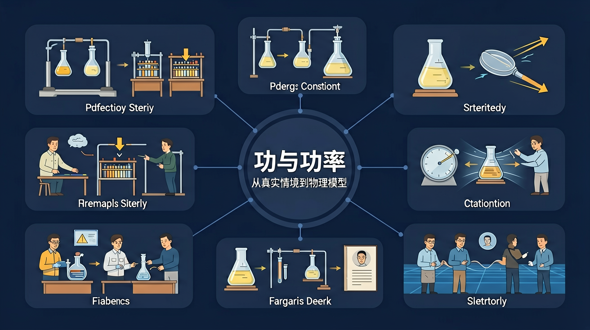

真实情境
小区电梯维修方案选择
物业公司需要将300kg的电梯配件从地面运到20楼（每层高3米）。现有两种方案：方案一用2名工人走楼梯搬运，耗时40分钟；方案二租用吊车，5分钟完成但费用较高。业委会需要评估哪种方案更合理。
已有经验
学生已掌握重力公式G=mg和高度计算
真正卡点
混淆功的概念（力与位移同向）与功率的效率意义
本课任务
计算两种方案做功大小与功率差异
怎样用物理模型解释和计算「功与功率」中的关键现象？

先选一个你关心的问题。后面的例子、提示和 AI 学伴都会围绕这个问题来帮你推进。
选择或输入后，本课会围绕你的问题展开。
物业公司需要将300kg的电梯配件从地面运到20楼（每层高3米）。现有两种方案：方案一用2名工人走楼梯搬运，耗时40分钟；方案二租用吊车，5分钟完成但费用较高。业委会需要评估哪种方案更合理。
学生已掌握重力公式G=mg和高度计算
混淆功的概念（力与位移同向）与功率的效率意义
计算两种方案做功大小与功率差异
功是标量，W=Fs cosθ，其中 θ 是力与位移夹角。垂直于位移的力不做功；阻力做负功。谈功必须同时明确哪个力、哪段位移。静止时位移为零，该过程中力做功为零。不要把“用力了”等同于“做了功”。
物体在水平面上匀速前进时，支持力做功为？
力与位移夹角小于 90° 做正功，大于 90° 做负功，等于 90° 不做功。摩擦力既可能做负功（阻碍滑动），在某些相对运动设定下也可能对某物体做正功，关键看该力与该物体位移夹角。合力的功等于各分力功的代数和。
物体竖直上抛上升阶段，重力做功的符号是？
平均功率 P=W/t；瞬时功率在力与速度同向时可写 P=Fv。发动机常用额定功率限制：速度增大时牵引力可能减小。比较“谁更费力”要分清功和功率。单位换算：1 kW=1000 W，注意时间用秒。
在相同位移上，做功相同但用时更短，说明？
本课任务：在能量滑板中观察重力沿路径是否始终做功，记录下坡与上坡阶段重力做功正负，并对照 W=mgh 的竖直高度差。
写清自变量、因变量和至少两个保持不变的条件，避免同时改变多个因素后无法归因。
至少记录三组带单位的数据或三个可复查的现象，不用“变大了”“更明显”代替证据。
用本课公式、粒子模型或受力关系解释趋势，并指出结论成立所依赖的模型条件。
换一个参数或真实情境预测结果，再用仿真检验；若不一致，回查变量、单位和边界条件。
分析「功与功率」问题时第一步应做什么？
力和位移共同决定做功，W=Fscosθ，方向夹角不能忽略。
动能看速度，势能看相互作用位置，能量变化由做功连接。
只有保守力做功时机械能守恒，非保守力做功会改变机械能。
恒力做功 W=F·s·cosθ。功是过程量、标量，可正可负可为零。功率 P=W/t，瞬时功率 P=Fv cosθ。发动机额定功率与牵引力、速度相互制约。
算功看该力与位移方向关系；求功率分平均与瞬时。机车以额定功率启动时 F=P/v 变化。
常见误区：常见误区是认为有力就做功，或功率越大牵引力一定越大而忽略速度。
摩擦力一定做负功吗？
记忆锚点：能量题先选系统，再看谁做功，最后判断是否守恒。
请设计一个与本课模型相似但情境不同的问题，必须写出研究对象、参考系或正方向、已知量、要判断的物理量，以及一个容易误判的选项。最后写诊断反馈：错在哪里、该看哪个条件、正确判断怎样得到。
通过探究恒力做功与功率计算，理解能量转化与守恒观念，掌握标量运算的正负号物理意义
起重机以恒定功率15kW吊起2吨货物，10秒内提升5米，计算钢绳拉力做功73500J与平均功率7.35kW，体现额定功率限制下的P=Fv关系
先判断力与位移夹角θ，再代入W=Fscosθ计算功；求瞬时功率用P=Fvcosθ，注意v为瞬时速度
计算功率时混淆平均功率与瞬时功率，忽略cosθ导致错误（如将水平拉力做功算为Fs而非Fscos30°）
课堂任务：请用“现象/文本/地图/实验数据 → 关键证据 → 学科解释 → 迁移应用”四步，重写一个关于「功与功率：从真实情境到物理模型」的新问题。
先动手改变变量，再用一句话解释图像为什么变了。
拖动参数，观察变量变化。仿真负责让现象可见，解释仍要回到本课的物理模型。
写出本课模型、变量和适用条件。
把模型用于一个新运动情境，并说明方向和单位。
设计一个反例，说明常见错误为什么站不住脚。
如果你能解释“怎样用物理模型解释和计算「功与功率」中的关键现象？”，这节课就真正过关了。
根据夹角θ的不同，功可分为正功和负功。当 0° ≤ θ < 90° 时，cosθ > 0，力对物体做正功，表示力促进物体运动，如马拉车前进；当 θ = 90° 时，力不做功；当 90° < θ ≤ 180° 时，cosθ < 0，力做负功，表示力阻碍物体运动，如刹车时摩擦力对汽车做负功。例如，滑雪者沿斜坡下滑时，重力做正功（θ=0°），摩擦力做负功（θ=180°）。需要特别注意的是，负功不表示功的大小为负值，而是体现能量传递的方向。正负功的判断对后续动能定理的理解至关重要。